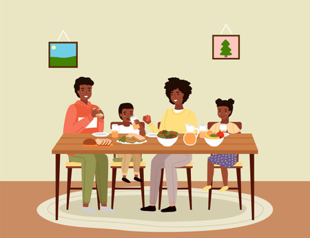

Involúcrate y Cambia Vidas
El voluntariado te permite usar tu tiempo y habilidades para mejorar la vida de otros. ¡Haz la diferencia en tu comunidad!
Descubre Cómo Ayudar
PROGRAMAS DE VOLUNTARIADO
Cada iniciativa de voluntariado se centra en los Objetivos de Desarrollo Sostenible. Tu participación en alguno de estos proyectos es crucial para producir efectos beneficiosos en la educación infantil, en las comunidades andinas de Cusco, así como en el fortalecimiento de mujeres y en el programa de salud.

¿Cuáles son los requisitos?
Tener entre 18 y 67 años de edad. No haber sido retirado del Voluntariado EsSalud, ni de ningún otro. Asistir a las charlas informativas. Aprobar las pruebas de selección y el periodo de prueba de 3 meses. Comprometerte a brindar 4 horas de tu tiempo un día a la semana.
Documentos necesarios para postular:
Copia de DNI vigente.

Constancia de estudios: carné universitario/instituto, recibo de matrícula o boleta de nota (solo de ser estudiante superior).
Certificado Único Laboral (Certijoven o Certiadulto).
Carné de vacunación.
Certificado de salud mental.
CONSTRUCCIÓN, HUERTA ECOLÓGICA Y TRABAJOS EN GRANJA
En este proyecto de voluntariado en Perú, el objetivo es asistir en la edificación, restauración y conservación de todo lo que la comunidad requiere. Se establecerá una comunicación directa con los individuos de la comunidad para satisfacer sus requerimientos en relación a las instalaciones. Adicionalmente, el voluntario participará en labores de granja con los animales pertenecientes a la comunidad y a las familias.
Descripción
El voluntario llevará a cabo acciones para conservar los lugares e infraestructuras de la comunidad en óptimas condiciones. Además, el voluntario tiene la capacidad de gestionar proyectos e ideas novedosas.
Actividades:- Cuidar, regar y monitorear las plantas del invernadero.
- Cuidar los animales de granja.
- Participar en el mantenimiento de las parcelas de cultivo.
- Organizar talleres informativos para familias y niños sobre el medio ambiente, las buenas prácticas ambientales, temas ecológicos, la biodiversidad.
- Trabajos con barro según temporada.
Requisitos
- Edad mínima: 18
- Edad máxima: Ninguna
- Responsabilidad con el horario de trabajo.
- Indumentaria: zapatilla cómoda para el campo, ropa cómoda de frío y sobre todo que se pueda ensuciar, un protector de pelo o gorra.
- Resistencia física.
Disponibilidad y Horario
- Logística: 50 minutos en autobús (2 sol/cada viaje).
- Lunes a viernes de 9 am a 1 pm.
- El proyecto está abierto todo el año.
- Recomendamos llegar durante el fin de semana para una mejor inducción.
ENSEÑANZA MONTESSORI O REFUERZO ESCOLAR
Una iniciativa educativa que surge en respuesta a la exigencia de proporcionar oportunidades más justas, a través de la educación, a aquellos que se encuentran en exclusión y marginación, incorporando de forma activa a la familia y la comunidad en el proceso. Además, se coopera en la atención de niños en guarderías sociales para respaldar a los padres trabajadores proporcionando un cuidado integral al infante.
Descripción
El voluntario llevará a cabo acciones para conservar los lugares e infraestructuras de la comunidad en óptimas condiciones. Además, el voluntario tiene la capacidad de gestionar proyectos e ideas novedosas.
Actividades:Para los más mayores:
- Educación Sexual Integral, Prevención de Adicciones, Educación Ambiental, Educación básica.
- Reforzamiento escolar y asesoramiento en las tareas.
- Ludoteca y tiempo libre.
- Recojo de información y sistematización.
Para los más pequeños:
- Las actividades serán en aulas y zona cerrada.
- Cuido de niños de 2-3 a 5-6 años
- Juegos didácticos
Requisitos
- Edad mínima: 18
- Edad máxima: Ninguna
- Indumentaria: zapatilla, ropa cómoda de frío y sobre todo que se pueda ensuciar.
- Responsabilidad con el horario de trabajo.
- Antecedentes penales.
- Prohibido llevar el móvil encima en los ratos de trabajo.
- No hacer fotos de 1º plano, solo generales y con autorización.
Disponibilidad y Horario
- Logística: A 20 minutos en autobús.
- Adolescentes de lunes a viernes de 14:30 pm a 18:00 (puede haber variaciones)
- Niños de 3 a 5 años será en turno de 9 a 12:30
- El proyecto no cierra en vacaciones escolares.
- Cerrado en festivos nacionales y del 23 diciembre al 12 de enero.
ENSEÑANZA Y REFUERZO EN COMUNIDADES
La educación Montessori es un programa que emplea dinámicas cautivadoras
para
instruir de
forma
diferente. En el sistema educativo se encuentran aproximadamente 60 niños, desde los bebés
hasta
los
cinco años, utilizando una metodología activa Peruana-Europea. En esta, el niño es el
constructor de
su propio aprendizaje mediante la estimulación precoz, las rutinas y el juego.
En cambio, el programa de fortalecimiento escolar se enfoca en llevar a cabo actividades de
fortalecimiento escolar para los niños de los niveles de educación primaria y secundaria,
que se
llevará a cabo mediante convocatoria.
Descripción
El programa educativo Montessori incluye actividades como: edificaciones, música y danza,
pintura,
modelado, psicomotricidad, juegos heurísticos, huerto, hora del cuento, ciencia y medio
ambiente,
teatro, comunicación, tareas lógicas y matemáticas, quechua e inglés, juegos de luces o
grafomotricidad, y juegos acuáticos.
El programa de fortalecimiento escolar lleva a cabo actividades de refuerzo en los
programas
de
matemáticas, comunicación integral e inglés para las niñas y niños de la comunidad.
Además,
se
llevan a cabo actividades recreativas, juegos tradicionales, deportes (dependiendo del
horario)
y se
imparten formación a los niños en aspectos de higiene y cuidado personal.
Requisitos
- Edad mínima: 18
- Edad máxima: Ninguna
- Los participantes menores de 18 años deben estar acompañados de los padres o tutores.
- Indumentaria: zapatilla, ropa cómoda de frío y sobre todo que se pueda ensuciar.
- Responsabilidad con el horario de trabajo.
- Certificado de antecedentes penales.
- No hacer fotos a los niños (excepto personal autorizado).
- No llevar el móvil en horario de trabajo.
Disponibilidad y Horario
- Logística: . 15 minutos andando (julio y agosto 2 minutos andando).
- Lunes a viernes de 9am a 1pm.
- El proyecto cierra en vacaciones escolares, del 15 de diciembre al 15 de marzo.
ESCUELA INFANTIL
El programa de refuerzo escolar se enfoca en llevar a cabo actividades de fortalecimiento
escolar
para los niños de familias en situación de vulnerabilidad en Cusco.
Podrás colaborar con la docente para mantener a 15 niños, ya sea para cuidarlos, realizar
juegos
educativos y respaldarles en las actividades de aprendizaje.
Se refiere a niños de 3 a 5 años.
Descripción
La docente es de edad avanzada, es un centro diseñado para que niños en situación de
vulnerabilidad
puedan tener un lugar y acceso a la educación básica.
El centro les ofrece un almuerzo a media mañana para que consuman el desayunos.
Tus tareas serán siempre asistir a la docente en el cuidado de los niños pequeños.
Requisitos
- Edad mínima: 18
- Edad máxima: Ninguna
- Los participantes menores de 18 años deben estar acompañados de los padres o tutores.
- Indumentaria: zapatilla, ropa cómoda de frío y sobre todo que se pueda ensuciar.
- Responsabilidad con el horario de trabajo.
- Certificado de antecedentes penales.
- No hacer fotos a los niños (excepto personal autorizado).
- No llevar el móvil en horario de trabajo.
Disponibilidad y Horario
- Logística: . 30 minutos andando o autobús
- Lunes a viernes de 9am a 1pm.
- El proyecto cierra en vacaciones escolares, del 15 de diciembre al 15 de marzo.
SANTUARIO DE ANIMALES
Proyecto ecológico que contribuye a salvaguardar la fauna silvestre nativa del país y de otras regiones de Perú. Estos animales han sido víctimas de maltrato, secuestros, devastación de áreas y han sido rescatados por el personal del santuario con el objetivo de recuperar su hábitat natural si es posible. Desafortunadamente, no todos podrán ser reintegrados y se mantendrá un cuidado constante en el sitio.
Descripción
Este trabajo voluntario en la Amazonía de Perú te brindará la oportunidad de ayudar a preservar la selva tropical y salvaguardar a los animales salvajes. Involucrarás en tareas que abarcan desde la protección de animales hasta la reforestación y proyectos de educación con la comunidad local. Después de una corta introducción, te incorporarás al esfuerzo por salvaguardar uno de los ecosistemas más biodiversos del planeta, desempeñando labores cotidianas vitales para la preservación y sostenibilidad de la zona.
Requisitos
- Edad mínima: 18
- Edad máxima: Ninguna
- Doble verificación en plaza
- Se requiere copia del currículum: No
- Vacunas recomendadas
- Los participantes menores de 18 años deben ser acompañados de los padres o tutores
Disponibilidad y Horario
- El trabajo diario tiene una estructura organizada pero flexible, adaptada al clima y las necesidades del momento. Un día típico podría verse así:
- Mañana (8:00 a.m. – 12:00 p.m.): Actividades de campo en la selva o el santuario de animales.
- Tarde (2:00 p.m. – 4:00 p.m./5:00 p.m.): Continuación de las actividades, como el cuidado de los animales o tareas de reforestación.
- El horario de trabajo suele ser de 5 días a la semana, pero puede variar según el proyecto y las circunstancias del momento. Cuanto más tiempo te quedes, más flexibles serán los horarios y más personalizada será tu experiencia.
COMUNICACIÓN Y VISIBILIDAD
Proyecto para incrementar la visibilidad de los proyectos de desarrollo con el objetivo de
facilitar
la llegada de ayudas externas para favorecer los proyectos de las comunidades.
Con tu colaboración en redes, correo y artículos, lograremos becar a más niños y niñas en la
escuela
montessori, suministrar más y mejores alimentos a la comunidad Inti Raimy, asistir a niños
de
comunidades a obtener una educación de alta calidad, y asistir a mujeres en sus tareas
diarias.
El
trabajo en este proyecto de carácter indirecto es crucial para que todo tenga un significado
y
poder
continuar respaldando a las comunidades.
Descripción
El voluntario lleva a cabo tareas como; grabar planos del proyecto de manera respetuosa, observar la vida cotidiana del voluntario, grabar en las excursiones y áreas del país, recoger experiencias o testimonios de aquellos que están colaborando, generar directos o publicaciones en Instagram/facebook, redactar artículos para el blog y comunicación por correo electrónico con entidades internacionales para obtener visibilidad.
Requisitos
- Edad mínima: 18
- Edad máxima: Ninguna
- Se requiere copia del currículum: No
- Cualificación requerida: Certificado de antecedentes penales.
- Los participantes menores de 18 años deben ser acompañados de los padres o tutores
- Los voluntarios deben portar sus propias cámaras fotográficas, de video, etc.
Disponibilidad y Horario
- Abierto todo el año, de lunes a viernes. Recomendable llegar durante el fin de semana para una mejor adaptación e inducción al programa y entorno.
APOYO EN CENTRO MÉDICO EN PERÚ
Te encuentras estudiando alguna disciplina médica o ya eres experto, te animamos a participar en el proyecto de Voluntariado en Perú en el área médica y comunidades en Cusco.
Descripción
En este voluntariado pueden involucrarse voluntariamente estudiantes o expertos del ámbito de la salud. El voluntario desempeñará el papel de colaborador en las labores cotidianas necesarias en el centro médico y en cualquier otra tarea que el médico responsable considere apropiada. El centro dispone de secciones de medicina familiar, atención primaria, de maternidad, niños, laboratorio, psicología, asistencia al personal en la elaboración de historias clínicas y en el seguimiento de pacientes, apoyo a los médicos de turno en las diferentes áreas del centro, medicina general, nutrición, odontología, enfermería y ginecología.
Requisitos
- Edad mínima: 18
- Edad máxima: Ninguna
- Indumentaria: Zapatillas, Bata de enfermero o médico blanca o/o verde (Consultar), ropa cómoda.
- Responsabilidad con el horario de trabajo.
- Experiencia de titulación en el ámbito sanitario (entregar en la llegada).
- Antecedentes penales.
- Prohibido llevar el móvil en los ratos de trabajo.
Disponibilidad y Horario
- Logística: 15-25 minutos en autobús
- Horario: De lunes a viernes de 9 am a 1 pm.
- Abierto todo el año excepto festivos nacionales.
COMEDOR SOCIAL
Proyecto social que proporciona alimentos a la comunidad y al personal del vecindario, el
voluntario
colabora en la preparación de alimentos (comida) en el área periurbana de la ciudad.
Alimentos
que
se proporcionan a los habitantes de las cercanías de la comunidad, siendo estos de costo
reducido y
en ciertas situaciones de forma gratuita (casos sociales).
Los beneficiarios incluyen aproximadamente 90 individuos, incluyendo madres gestantes,
niñas,
niños,
adultos mayores, madres de familia en condición de desamparo y personas con discapacidad.
Descripción
Se realizan actividades de apoyo en la preparación de alimentos, talleres de cocina,
formar
las
filas y repartir raciones respetando los protocolos de bioseguridad, limpieza del local
del
comedor
a la hora de finalizar las actividades diarias y talleres.
Actividades:
- Apoyo en la preparación de alimentos.
- Talleres de cocina.
- Acompañamientos con mujeres a los mercados.
- Ayuda a sus crianzas de animales menores.
- Apoyo en los huertos para alimentos.
- Charlas de equidad de género, aseo e higiene personal y en las viviendas, nutrición y buena alimentación a las personas beneficiarias a la hora de brindar el almuerzo.
- Formar las filas y repartir raciones respetando los protocolos de bioseguridad.
- Limpieza del local del comedor a la hora de finalizar las actividades diarias.
Requisitos
- Edad mínima: 18
- Edad máxima: Ninguna
- Se requiere copia del currículum: No
- Cualificación requerida: No
- Si eres menor de edad puedes venir acompañado de tus padres o tutores.
- Indumentaria: zapatilla, ropa cómoda de frío y sobre todo que se pueda ensuciar, un protector de pelo o gorra.
- Responsabilidad con el horario de trabajo.
Disponibilidad y Horario
- Logística: 20 minutos de viaje.
- Horario: Lunes a viernes de 9 a 11:30 (11:30 a 13:00 dar las comidas).
- Este proyecto está abierto todo el año. Excepto festivos nacionales (ver abajo).